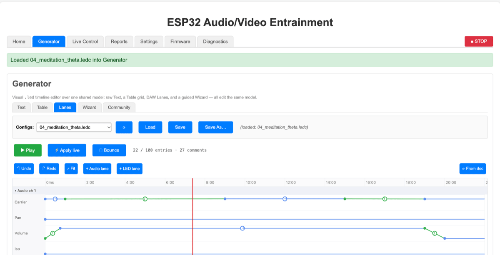

Playing a session
What you are trying to achieve: start one of the sessions in the library, get your glasses and headphones on before it begins, stop it when you want, and know what the status and the end-of-session report are telling you.
Start a session
- Open the Home tab.
- Pick a file from the Configs dropdown. There is no separate load button — selecting a name loads it straight away, and the note beside the dropdown changes to (loaded: 01_sleep_onset.ledc — Device (SPIFFS)) so you can see which copy you got. The list is grouped by where sessions live: Device (SPIFFS) is stored on the device itself, Browser (local) is saved in this browser only. Press ⟳ to re-read both lists.
- The session's timeline appears in the big text box. You can read it, and you can edit it before playing — what plays is the text in that box, not the file on disk.
- Set Delay. This is a countdown in seconds before playback actually starts, and it defaults to 60 for a reason: it is the time you need to put the glasses on, get the headphones settled and lie down. 0 starts immediately.
- Press ▶ PLAY Config.
During the countdown the status line reads Starting in 47s — put on your glasses & headphones… and ticks down once a second. Pressing ■ STOP during the countdown cancels the session before anything happens.
The one-time safety notice
The first time a given browser plays a session that actually flickers an LED, a dialog headed Before you begin appears with the contraindications, and playback does not start until you press I understand — continue. Cancel, press Escape, or click outside it and the play is abandoned with Playback cancelled — safety notice not accepted.
The acknowledgement is stored in that browser and never shown again. Audio-only sessions, and sessions whose LEDs are steady rather than flickering, never trigger it. You can bring it back for the next session from Settings → Safety notice → Show safety info again — worth doing before you hand the device to someone else.
This notice is the only safety gate in the system, and it lives entirely in your browser — the firmware has no photosensitivity clamp. A session started from another browser, or from a browser that already clicked through, gets no prompt. It is a reminder, not a protection.
Loading a session from a file instead
- Press 📂 Upload File… and choose a
.ledc,.ledor.txtfile. - The file is read in the browser and dropped into the text box; the status confirms Loaded myfile.ledc (2841 bytes) — click PLAY to execute.
- Review it, then press ▶ PLAY Config.
Loading and playing are deliberately two steps so you always get a look at
what is about to run. Nothing was written to the device — to keep it, use
Save (writes back to wherever the current session came
from) or Save As…, which asks for a filename ending
in .ledc and a destination of Device (SPIFFS) or
Browser (local). Clear empties the
box.
What happens when you press play
Most of the time the device does everything itself and the browser is free the moment playback starts. The exception is speech. There are three paths, and the status message tells you which one you got:
| Session | Status message | Can you close the browser? |
|---|---|---|
| No spoken lines | Playing | Yes. The whole timeline — tones, flicker and any background track the device fetches itself — runs on the device. |
| Spoken lines, and every phrase is already on the SD card | Playing offline (speech from SD card) | Yes. The device narrates on its own. See offline playback. |
| Spoken lines not on the card | Playing (speech merged into background) | No. The browser synthesises the speech, mixes it with the background into one audio stream and feeds it to the device in real time for the whole session. Close the laptop and the audio stops. |
On that third path a progress bar appears first, labelled Preparing… — speech synthesis and mixing take a few seconds and happen before the countdown, so playback still begins promptly when the countdown reaches zero. The result is cached in memory, so stopping and replaying the same unchanged session skips the wait.
If a speech session is going to stream from the browser, leave the tab in the foreground and stop the screen from locking. A backgrounded or locked browser gets its timers throttled by the operating system, the stream starves, and you hear clicks and dropouts roughly once a minute. This is a documented, investigated failure — see troubleshooting. The permanent fix is to put the phrases on the SD card.
Watching it run
Switch to Live Control. The status beside the
heading counts up — timeline @ 143s — and every slider tracks the
running session, so you can watch the frequencies glide and the brightness
breathe. You can also intervene: any slider you touch takes effect immediately
over a one-second ramp, overriding the timeline until its next instruction for
that channel. Pulling bright down mid-session because it is
too intense is a perfectly normal thing to do.
A short press of the device's hardware button writes a snapshot of the complete live state into the device log, timestamped against the session. This is the "mark this moment" control: press it when something notable happens and the report will tell you exactly what every channel was doing then.
Stopping
Three ways, all equivalent in effect:
- The red ■ STOP button in the tab row. It is on every tab. It cancels a pending countdown, aborts any audio the browser is still streaming, and drops the timeline on the device.
- Hold the device's hardware button for three seconds. The firmware runs the same shutdown sequence as the web button, fading the audio before silencing the LEDs so there is no click or pop.
- Let it finish. Sessions end on their own at the end of their timeline.
However it ends, the status confirms the stop and adds — report when the session ends.
The session report
The page notices the moment the timeline goes from running to stopped — whether that was a natural end or your STOP — and fetches a report. It appears on the Reports tab and contains:
- Session length so far in seconds.
- Button press snapshots — for each short press of the hardware button, the time into the session and the resolved state of every active audio and LED channel at that instant (frequency, pan, volume, modulation; flicker rate, duty, brightness, colour).
- Last loaded config — the exact timeline that ran, so the report is self-contained.
An editor opens above it with a Title (defaulted to the session name) and a Comments box prompting for "Notes about this session (how you felt, effects observed, tweaks to try…)". That is the point of the whole feature: the numbers are easy, your own notes are the data worth having. Press 💾 Save.
Two logs are attached when available. Device log is the firmware's own log captured for the full session — not just the last fragment the device's buffer holds, because the page collects it continuously while the session runs. Browser log records what the page did (compilation, HTTP calls, WebSocket activity, errors). Each has 👁 View and ⬇ Download.
Where reports are kept is up to you: Settings → Reports → Store reports in offers none (display only), local (this browser) or spiffs (on the device). If a generator URL is configured they are also uploaded there. Saved reports are listed on the Reports tab under Saved reports:, with 🗑 to delete the selected one and ⟳ to refresh; selecting a name opens it, and the open report's name is reflected in the page URL so you can bookmark or share a link to it.
Playing from the Generator tab
The Generator tab has its own transport bar for when you are editing rather than listening:

- ▶ Play — plays the session you are editing, through exactly the same path as Home's play button (speech and background handling included), but with no pre-roll delay.
- ⚡ Apply live — pushes your edits onto the running engine without restarting the timeline.
- ⭯ Bounce — renders the whole session (background, speech and tones) to a single WAV file in the browser.
Editing sessions is covered in the session developer section.
Next
To run speech sessions with the laptop closed, see offline playback from the SD card.